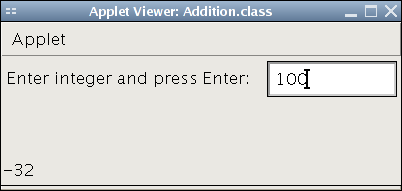

(it is not necessary to include all widgets here (e.g., prompt --
see code), just the ones used for
computation)
User Manual:
Description:
Addition is a trivial little applet that keeps a running total of integers
entered by the user.
Operation:
There is just one text box in the applet window:
- Enter integer and press Enter:
Type in an integer value and press Enter. It can be negative, but must not
contain any decimal points, commas, or other non-numeric characters (letters,
punctuation etc.).
Each time you type a number and press Enter, the status bar will be updated
to show the current running total. Keep entering numbers to see the status bar
change.
Test Cases, with expected results:
Put some effort into designing your test cases; QA is a challenging job!
The idea is that if your program passes all the test cases, you'd be confident
shipping it to a paying customer.
Normal Test case:
- Enter integer and press Enter: 100
- Enter integer and press Enter: -165
- Enter integer and press Enter: 033
- Status bar: -32
Test case that breaks (invalid input):
- Enter integer and press Enter: -55
- Enter integer and press Enter: 2.5
- (Applet ignores input or crashes)
Screenshots

(Can be embedded here or left as separate files if you like,
but list the filenames here.)
This write-up is done in HTML as a webpage, and this sample lab is done as a
Java Applet. If you do this as well, you may opt to embed your applet
directly into your lab write-up. But you should still have static
screenshots in your write-up.